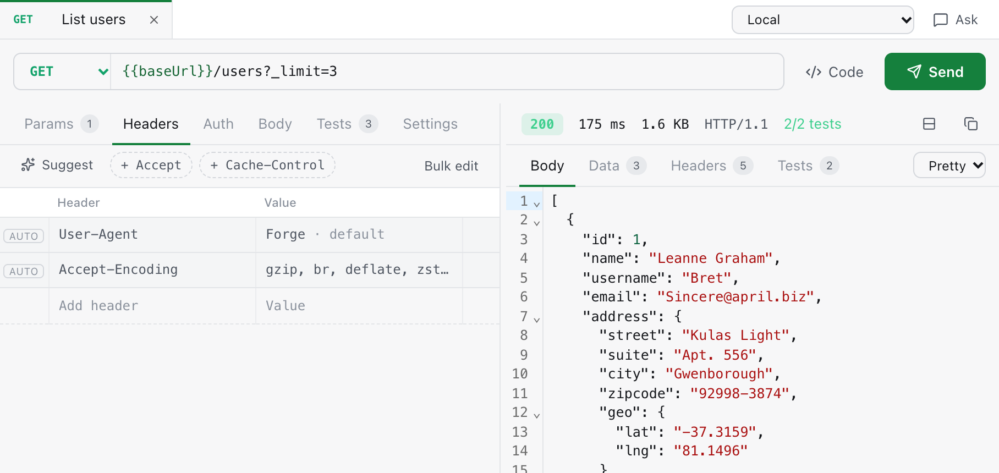
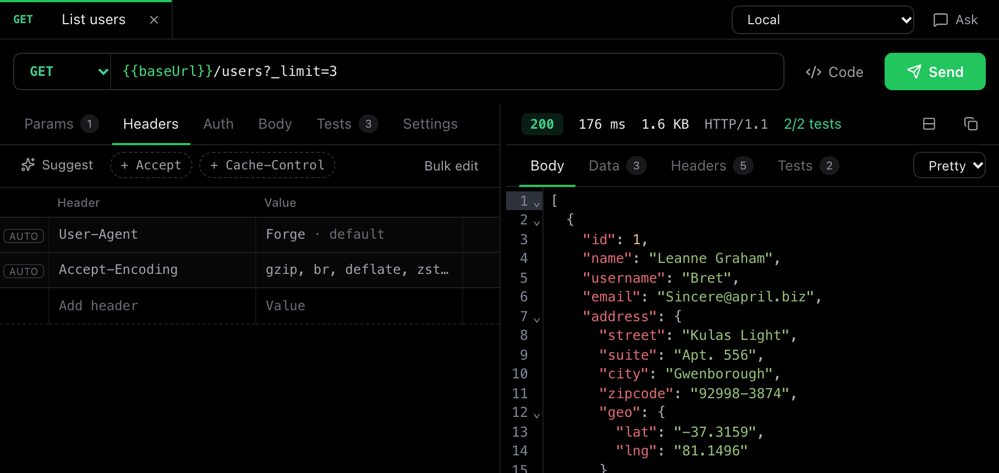
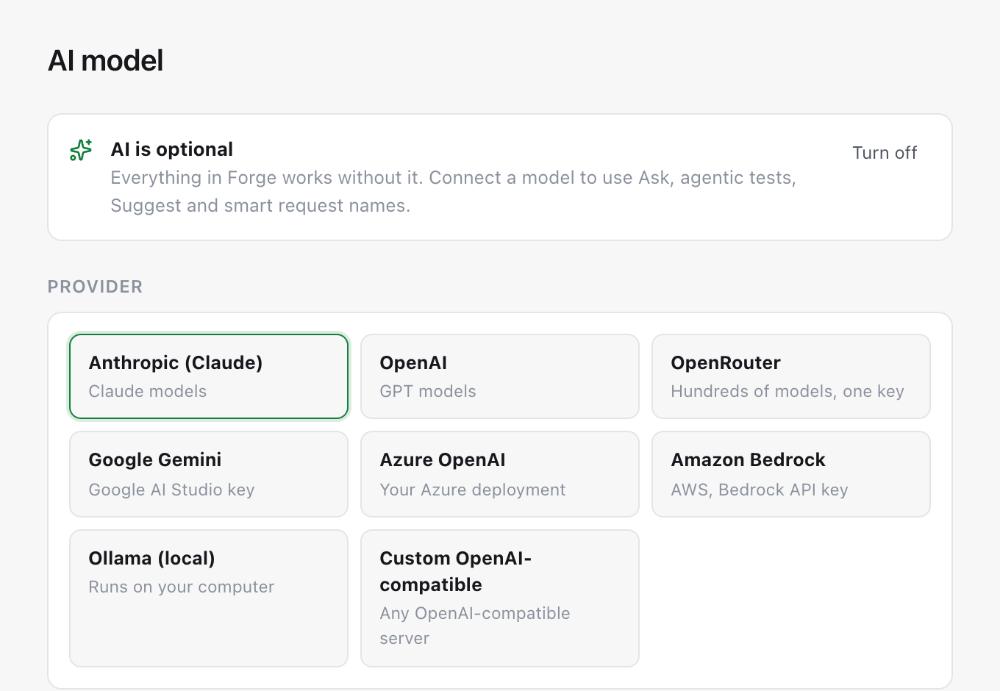
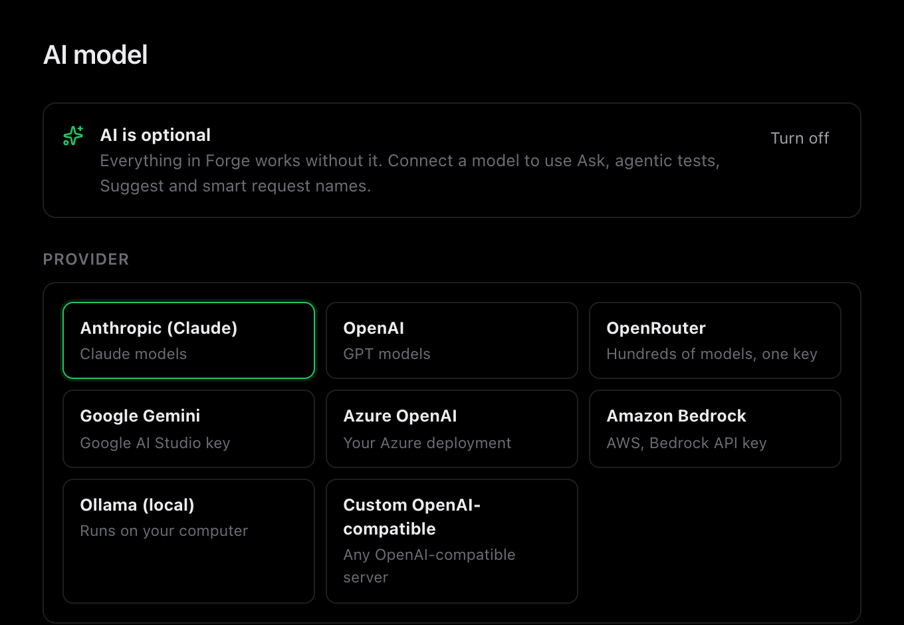

Quick to write
Query params stay in sync with the URL. Paste a block of headers and Forge sorts them into rows.
How requests workFree and open source, made by Stellitron
Send a request, check the answer, save it next to your code. Forge handles REST, GraphQL and WebSockets, and it can test MCP servers and AI agents too. No account to create and nothing stored in someone else's cloud.
For macOS, Windows and LinuxAll downloads


Paste a URL or a whole cURL command and press send. The response opens right beside your request, formatted and easy to scan.
{{baseUrl}} once and switch between local, staging and production from the top bar.The things you reach for every day are one click away, and none of them need AI to work.
Query params stay in sync with the URL. Paste a block of headers and Forge sorts them into rows.
How requests workTurn a good response into tests with one click, then run a whole folder whenever you like.
Adding testsSee JSON as a table you can sort and search, then export it to Excel, PDF or slides.
Tables and reportsConnect to MCP servers and A2A agents, call their tools, and watch every message go by.
MCP and A2AForge reads the shape of your JSON and lays it out as a table. Nested fields become columns, so you never have to dig through brackets.


Every request is a small, readable file in a folder you choose. Commit it, review it in a pull request, and your team gets it on the next pull.
Connect a model you already use and ask questions about a response, get suggested headers, or let an agent explore your API and report back.
ClaudeOpenAIGeminiAzureBedrockOpenRouterOllama
{{token}}, never the value behind it.

You shouldn't have to read a policy to know where your data goes. Here is the whole story.
Download it and start working. There's no account to make and nothing to log in to.
Forge collects no analytics. The only thing it checks on its own is whether a new version is out, and you can switch that off.
If an AI-built request would send a token somewhere new, Forge stops and asks you first. You can't turn this check off by accident.
Each update is signed by Stellitron and checked before it installs, and it only installs when you say so.
Forge uses your computer's proxy and certificates, so it works on work networks without extra setup.
Something missing here? Ask us on GitHub
Yes, for personal and commercial use. Forge is open source under the Apache 2.0 license, with no paid plan and no locked features.
Stellitron, an AI and cloud engineering studio in Bengaluru. We built Forge for our own work and develop it in the open. Contributions are welcome.
Yes. Forge imports Postman, Insomnia and Bruno collections, OpenAPI and Swagger files, HAR files and cURL commands. Any tokens in imported environments are moved to the local secrets file.
Keep your Forge folder in a git repository. Requests and shared settings are committed like code, and each person keeps their own tokens on their own computer.
No. Requests, tests, imports, tables and exports all work without one. If you do connect a model, you choose which, and you can use a local one through Ollama.
They are the ways AI assistants and agents talk to tools and to each other. Forge can test MCP servers and A2A agents, and it can also act as an MCP server so Claude, Copilot or Cursor can run your saved requests.
Open an issue on GitHub. If it's a security problem, please report it privately instead.
New here? The getting started guide walks you through your first request.